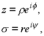
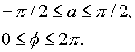

|
В. И. ЕЛИСЕЕВ ВВЕДЕНИЕ В МЕТОДЫ ТЕОРИИ
ФУНКЦИЙ ПРОСТРАНСТВЕННОГО КОМПЛЕКСНОГО ПЕРЕМЕННОГО |
|
1.1.5. Геометрическая иллюстрация пространственного комплексного числа
Вершиной классической математики и математического анализа является теория функций комплексного переменного (ТФКП), основателем которой является французский математик О. Коши. Теория дошла до нашего времени почти в том виде, в котором она была создана.
Значительно усилив мощь математического аппарата в инженерных расчетах, теория Коши оставила инженерный аппарат плоским расчетным. Для перехода к описанию пространственных физических процессов и явлений требуется введение в аппарат дополнительных координат, которые не соответствуют определению пространственной точки и окрестности ее, которая заложена в теории Коши. В теоретической физике например, вводят матрицы, которые ближе к программному обеспечению чем к математическому аппарату.
Для описания пространственных явлений и процессов исследователи строят свои конкретные физико-математические модели. Инженерный расчет достигает успеха лишь в том случае, когда он проводится с соблюдением законов алгебры обычных чисел.
Сложность физических процессов, например, на уровне атомного ядра и электронных оболочек требует создание эффективной пространственной модели.
Теория Коши в этом плане дает предпосылки для построения такой пространственной модели и она используется в теоретической физике. Теоремы Коши об изолированных точках и вычетах, а также взаимосвязь точек на плоскости комплексных координат дают основание на пересмотр абстрактного понятия точки. Рассмотрим последовательно: линию, плоскость, пространство, опираясь на принятые понятия, но делая свои выводы.
Линия рассматривается как одномерное пространство, как и делают современные исследователи. Однако как только на линии ставится точка ноль, как начало координат, что означает на инженерном языке привязку этой линии к реальному пространству, назвать линию одномерным пространством означает допустить грубейшую ошибку. Переход по линии из через точку 0 к нельзя не обогнув 0 по дужке и совершив оборот на угол .
Рис. 1. Ось в комплексном пространствеМожно игнорировать этот факт,
называя линию одномерным пространством, но можно утверждать, что линия терпит разрыв в точке начале координат, какой бы минимальный радиусДужке
не был, либо это уже не одномерное пространство.Далее рассматриваем установившееся понятие двумерного (плоского) пространства. Если плоскость рисуется без начала координат, то это понятие не несет физического смысла. Если плоскость привязана к реальному пространству, то в ней фиксируется начало координат. В этом случае логика предыдущих рассуждений вступает в силу. Окрестность нуля не принадлежит этому двумерному миру. Окрестность нуля выколотое двумерное пространство. Определение, ноль имеет неопределенный аргумент
, физически означает, что плоскость проколота лучом, исходящим из другого измерения. Последнее и утверждает, что плоскость несет в себе элемент пространства. Рис. 2. Комплексная плоскостьНельзя пройти точку ноль по прямой, не обогнув ее по дужке в его окрестности. Можно радиус дужки устремить к нулю, однако физическая сторона и в этом случае не меняется. Определение нуля как
Продолжая эту логическую цепочку, восстановим к плоскости не линию,
как это делает классическая математика, а цилиндрическую трубочку радиуса окрестности нуля. Сфера в таком пространстве является сферой с проколотыми вершинами. Пространство внутри сферы между ее внутренней поверхность и наружной поверхностью цилиндрической оси есть пространство другого измерения, чем пространство вне сферы и внутри изолированной оси. Рис. 3. Комплексное пространство.Простейшей пространственной кривой будет
кривая  .Кривая
характеризуется двумя аргументами и двумя радиусами : R-радиус
сферы , -радиус
цилиндрической оси. Двигаясь по кривой аргумент получит
приращение ,
аргумент получит приращение .На кривую можно натянуть поверхность без
точек самопересечения и нельзя сжать без складок
в плоскую кривую. Более сложные кривые имеют,
выражаясь физическим языком, большее количество
намоток по поверхности сферы и цилиндрической
оси.
.Кривая
характеризуется двумя аргументами и двумя радиусами : R-радиус
сферы , -радиус
цилиндрической оси. Двигаясь по кривой аргумент получит
приращение ,
аргумент получит приращение .На кривую можно натянуть поверхность без
точек самопересечения и нельзя сжать без складок
в плоскую кривую. Более сложные кривые имеют,
выражаясь физическим языком, большее количество
намоток по поверхности сферы и цилиндрической
оси.
Становится очевидным почему при извлечении корня из+1 имели два разных корня
только при периодичности изменения аргументов перед мнимой единицей I и перед мнимой единицей J . (См. Извлечение корня 1.1.1.)При такой геометрической интерпретации абстрактное понятие точки , линии , плоскости детализируются
: точка есть сфера радиуса , линия есть цилиндрИмеет
Комплексное пространство впервые введено в работах [1], [2], [3], [4]. Оно может быть интерпретировано как в цилиндрических, так и сферических координатах в соответствии с формулами, его определяющими.
Раскроем комплексы
z и s , входящие в формулу (1.3. и 1.4.).В комплексной плоскости имеем

где r
, r - модули комплексных чисел z, s :где
- аргументы комплексных чисел.При таком обозначении комплексы
z, s определяются через свои полярные радиусы, соответственно равные:и аргументы f
= arg z, y = arg s , которые определены с точностью до любого слагаемого, кратного 2p :Следовательно, имеем
Так как единичные векторы
i и j (мнимые единицы) связаны в пространстве законом коммутативного умножения ij=ji, то комплекс может быть преобразован и к следующему виду:где соответственно имеем уже:
В дальнейшем будет показано, что в пространстве комплексных чисел нет выделенного направления и обе записи эквивалентны.
Далее, применяя к пространственному комплексу n формулу Эйлера, получим
где
R1 определен как комплексный модуль, равный- комплексный аргумент, равный

периодические свойства, которого будут выявлены в дальнейшем.
Преобразуем комплексный модуль по законам комплексной алгебры. Выделение действительного модуля дает выражение
а действительного аргумента
Таким образом, пространственный комплекс записывается в виде
(1.5.) |
где
R,Перейдем к геометрической иллюстрации комплексного пространства.
В цилиндрических координатах (рис. 4) в соответствии с формулой (1.3.) к плоскости
z=r eif восстановим из начала координат вектор js =jreiy , так что модуль r будет фиксировать расстояние от этой плоскости (z).При такой интерпретации вектор
js =jreiy при изменении- и аргумента y
Рис. 4. Построение цилиндрической комплексной системы координат четырехмерного пространства. Сложение мнимых векторов в четырехмерном пространстве Y.Рис. 5. Построение цилиндрической комплексной системы координат четырехмерного пространства. Сложение мнимых векторов в трехмерном пространстве Y.
опишет цилиндрическую ось, сечение которой будет иметь некоторый строго положительный радиус
e , e >0, в том числе и сколь угодно малый на любом сечении, параллельном плоскости (z). Таким образом, вектор js будет идти по образующей, фиксированной углом y на этой цилиндрической оси.Конкретная точка
n в цилиндрических координатах представляет сумму двух векторов: вектора r eif , лежащего в плоскости (z), и вектора jrejy , лежащего на цилиндрической оси.В простейшем случае построенное четырехмерное пространство переходит в трехмерное. Это происходит при равенстве аргументов в плоских комплексах
z, s .В этом случае все параметры, определяющие точку n , становятся действительными
где
- теперь тоже действительное число.Изображение такой точки представлено на рис. 5, где угол
a обозначен через q . В этом случае точка определена тремя независимыми переменными r, r , f ;Образующая, по которой идет вектор
jreif , фиксирована углом f , равным углу комплекса, лежащего в плоскости (z). Все три вектора лежат в одной плоскости: два составляющих z=r eif , s =jreif и суммарный вектор n Рис. 6. Построение сферической комплексной системы координат: а- комплексная сферическая система координат трехмерного пространства; б - делители нуля в комплексной системе.При постоянном модуле
и изменении аргументов a, f в пределах
суммарный вектор
n опишет сферу с выколотыми вершинами по оси js (рис. 6, рис. 7.а.). Точка n в пространстве (n ) фиксирована тремя действительными параметрами R, f , a.Формула (1.5.) определяет сферические пространственные комплексные координаты:
Третья координата имеет вращение вокруг оси.(Этот вариант не рассматривается в квантовой механике , а вводится другими условиями , чтобы результат соответствовал эксперименту).
Рис. 7. Сферическая система координат трехмерного пространства: сфера в трехмерном комплексном пространстве. Рис. 8. Сферическая система координат трехмерного пространства: мнимый суммарный радиус-вектор делителей нуля.Мини оглавление:
[0], [1.1.1, 1.1.2, 1.1.3, 1.1.4, 1.1.5, 1.1.6, 1.1.7, 1.1.8, 1.2, 1.2.1, 1.2.2, 1.2.2.a, 1.2.2.b, 1.2.2.c, 1.2.2.d, 1.2.2.e, 1.2.2.f, 1.2.2.g, 1.2.2.h, 1.2.3, 1.3.1, 1.3.2, 1.3.3, 1.3.4, 1.3.5, 1.3.6, 1.4.1, 1.4.2, 1.5, 1.6, 1.7.1, 1.7.2, 1.7.3.1, 1.7.3.2, 1.7.3.3, 1.7.4.1, 1.7.4.2, 1.8.1], [2.1, 2.2],[3.1, 3.2, 3.3, 3.4.1, 3.4.2, 3.4.3, 3.4.4, 3.4.5],[4.1, 4.2, 4.3, 4.4],[5.1, 5.1.Рис.52, 5.2, 5.3, 5.4, 5.4.Т1, 5.4.Т2, 5.4.Т3, 5.5.1, 5.5.2, 5.5.3, 5.5.4],[6.1.1, 6.1.2, 6.2.1, 6.2.2, 6.2.3, 6.2.4, 6.2.5, 6.3, 6.4.1, 6.4.2, 6.5.1, 6.5.2],[7.1, 7.2, 7.3, 7.4, 7.5, 7.6, 7.7.1, 7.7.2, 7.8.1, 7.8.2, 7.8.3, 7.9],[8.1, 8.2.1, 8.2.2, 8.3, 8.4, 8.5, 8.6, 8.6.T1, 8.7, 8.8.1, 8.8.2, 8.8.3, 8.9.1, 8.9.2, 8.9.3, 8.10, 8.10.T2, 8.10.T3],[9.1, 9.2, 9.3, Рис.88, 89, 90, 91, 92, 93, 94, 95, 96, 97, 98, 99, 100],[10.1, 10.2, 10.3, 10.4, 10.5, 10.6, 10.7, 10.8, 10.9, 10.10, 10.11, 10.12, 10.13, 10.14, 10.15.1, 10.15.2, 10.16.1, 10.16.2, 10.17, 10.18],[11]
Размещенный материал является электронной версией книги: © В.И.Елисеев, "Введение в методы теории функций пространственного комплексного переменного", изданной Центром научно-технического творчества молодежи Алгоритм. - М.:, НИАТ. - 1990. Шифр Д7-90/83308. в каталоге Государственной публичной научно-технической библиотеки. Сайт действует с 10 августа 1998.
E-mail: mathsru@gmail.com